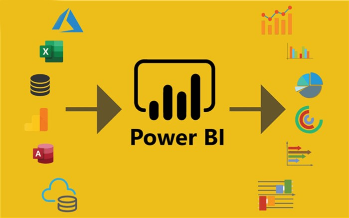
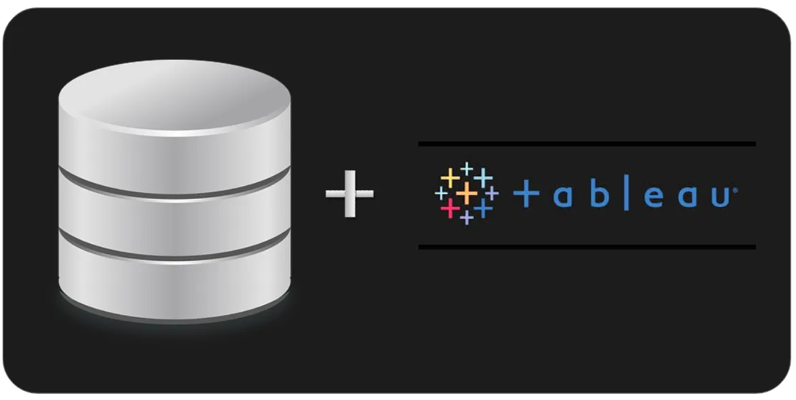

In this data cleaning project, I performed several critical data preparation tasks on the "Nashville_Housing" database to enhance its usability and reliability.
These data cleaning and transformation steps aimed to ensure data consistency, completeness, and improved usability for further analysis and reporting, making the "Nashville_Housing" database more reliable and organized.


I analyzed COVID-19 data from "covidDeaths" and "covidVaccination" tables, calculated key metrics, and visualized vaccination progress for European countries.
Explore this project for valuable pandemic insights. 📊🦠

Data Analyst job survey
Dive into the fascinating world of Olympic Games data with my data exploration project!
Leveraging SQL queries on 'athlete_events' and 'noc_regions' datasets, I've unraveled compelling insights and trends from decades of athletic excellence.
From medal analyses to historical performance, this repository is your gateway to exploring the data behind the world's greatest sporting event.
Check out my interactive web application linked to GitHub for an engaging and informative experience! 🏅📊

I analyze sales data, deriving valuable insights from customers' purchase history.
I excel in the art of transforming sales figures into actionable strategies.
My expertise extends from mastering essential SQL queries to tackling complex challenges with SUB QUERY, CTEs, AGGREGATE, WINDOW functions with
customer segmentation analysis using the RFM technique
I built a comprehensive HR dashboard entirely from scratch using Excel's powerful tools, including Power Query and Power Pivot.
By creating custom measures, I transformed raw HR data into actionable insights.
This Excel HR dashboard provides a user-friendly interface for HR professionals,
offering a visual representation of key metrics, performance trends, and workforce analytics.
Dive into this project to witness how data can drive HR decision-making and streamline human resource management. 📊🔍

Donec eget ex magna. Interdum et malesuada fames ac ante ipsum primis in faucibus. Pellentesque venenatis dolor imperdiet dolor mattis sagittis magna etiam.